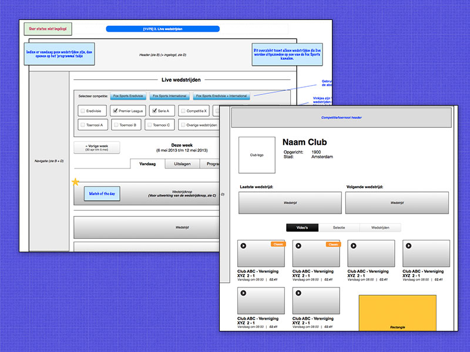
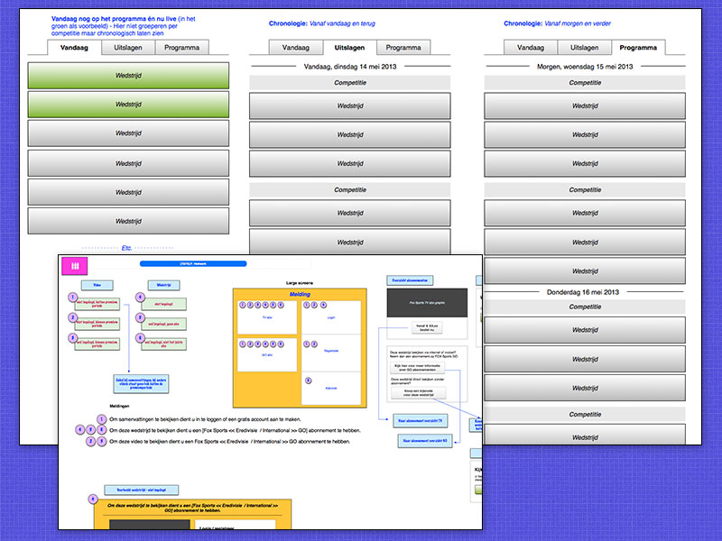
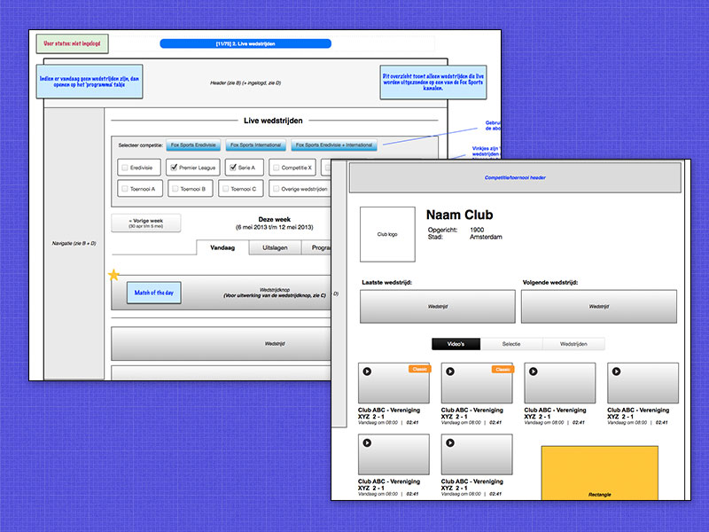
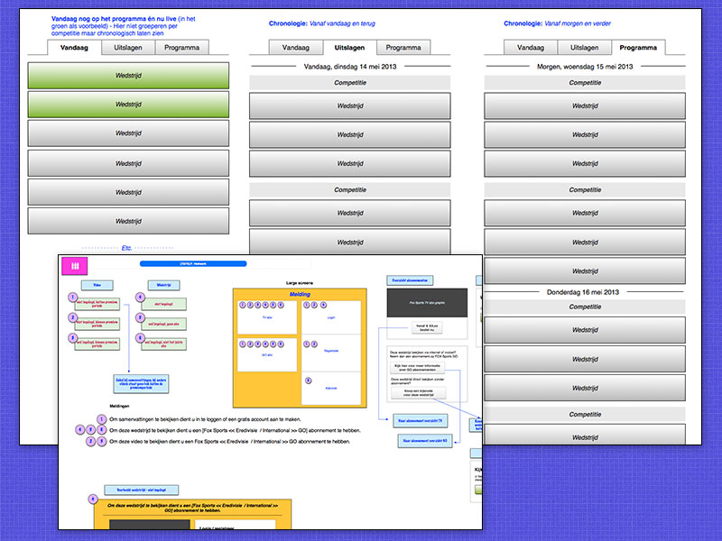
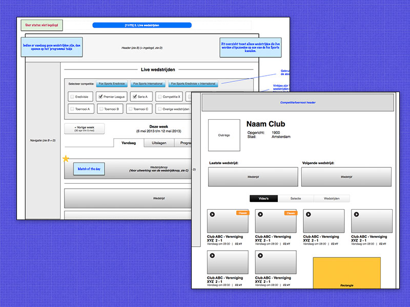
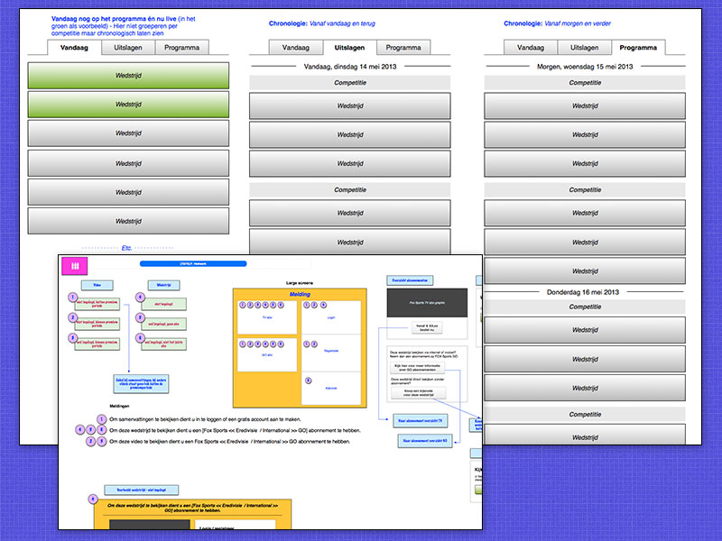

FOX Sports is de nieuwe naam voor een project waar ik eerder aan heb gewerkt, Eredivisie Live. Het feit dat er een rebranding nodig was werd aangegrepen om de website op de schop te gooien en compleet responsive te maken. In een later stadum zijn er meer sporten aan de website toegevoegd zoals tennis en american football. Het project is een doorlopend proces van verbeteringen en toevoegingen, er wordt gebruikt gemaakt van de scrum methode).
Als freelancer bij de Infostrada Sports Group was ik verantwoordelijk voor het interactie-ontwerp binnen een compleet scrumteam en ben ik een tijd verantwoordelijk geweest voor de user stories en het backlog als interim product owner.
Bekijk de website: foxsports.nl

